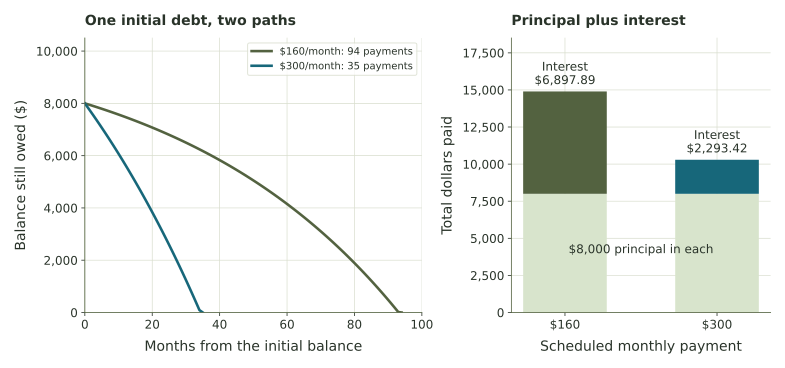

Comparing two loan repayment plans
Calculate how two monthly payments affect the length and total interest cost of a loan.
An $8,000 loan at 18% annual interest
A hypothetical borrower owes $8,000. Use a fixed 18% nominal annual rate, divided across twelve monthly updates, so \(i=0.18/12=0.015=1.5\%\) per month. The loan has a fixed rate and no additional purchases or fees. Interest is added first, then a payment is made.
Compare Plan A, a fixed $160 monthly payment, with Plan B, a fixed $300 monthly payment. The final payment is the amount remaining due when that amount is below the scheduled payment. This exercise uses one interest calculation per month. Credit card issuers may calculate interest daily.
Here M represents the scheduled monthly payment. The ending balance becomes the next month’s starting balance. For the long comparison here, the calculator keeps full internal precision and rounds its displayed results to cents. Use that precision when you compare your results with the calculator.
What happens in the first month?
Both plans begin with the same balance and rate. Calculate interest before subtracting either payment. Subtract interest from the payment to find how much reduces principal.
Trace both plans all the way to payoff
Predict which plan takes longer and which has greater total interest, then run the calculation. It repeats the same monthly update you used by hand, reducing the final actual payment when the remaining due is smaller than M.
The trace shows the first six months and the payoff month. Dollar values are rounded for display; calculations retain precision. The payoff month’s actual payment can be smaller than the schedule.

How does an earlier balance reduction change later interest?
Use the payoff results to compare duration and cost. The calculator computes interest savings from unrounded totals before displaying cents. Subtracting already-rounded displayed totals can differ by one cent; that difference is accepted here.
Change an assumption and make a new prediction
Suppose Plan B’s first $300 payment is followed by a new $50 purchase added to the balance after payment. The first ending balance would be $7,870 instead of $7,820. At the same 1.5% rate, next month’s interest would be $118.05 instead of $117.30. With the added purchase, the following month begins at a larger balance and requires a new repayment calculation.
Use the loan explorer to test another fixed payment or compare rounding rules. Select full internal precision to reproduce this application’s results. The cent-rounded reading uses the same interest-and-payment sequence, with a different rounding convention.